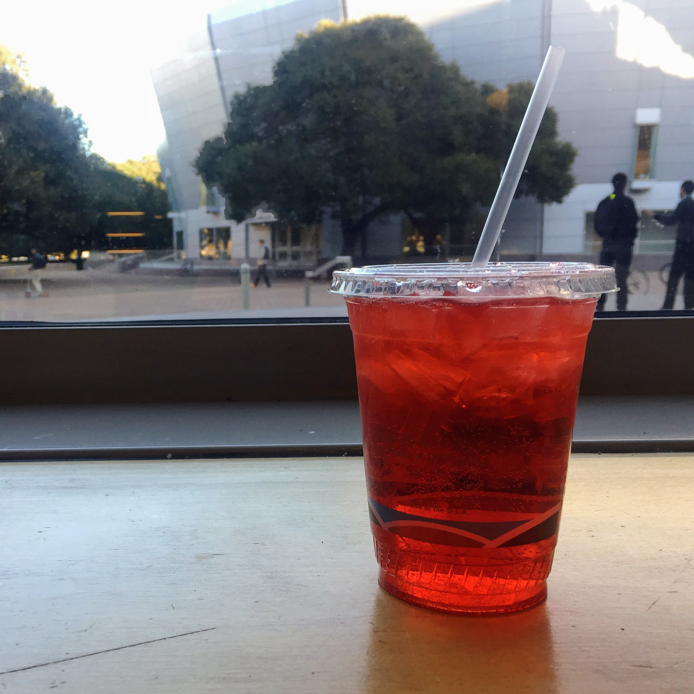

Victoria Kirst
Last updated Sep 8, 2022
Victoria Kirst
Last updated Sep 8, 2022
When's the last time you've had an Italian soda? It had been a while for me, but I wanted to join my friend for a non-caffeinated beverage at Bytes and I became reaquainted with the combination of fizzy water and artificial fruit syrup. Italian sodas are not so sweet as a normal soda and not so boring as a flavored carbonated water. The Italian sodas at Bytes also have no cream in them (or maybe they do if you ask; I haven't tried), which makes it a nice coffee shop alternative for the times when you're feeling a refreshing drink that doesn't have caffeine or milk.
Recommendation: Raspberry Italian soda
When your boba craving strikes, head over to Pop Tea Bar, a cute little bubble tea shop on Cambridge Avenue. The menu is your standard bubble tea fare with nothing too adventurous on the menu -- no bubble tea floats, for example -- but the tapioca is fresh, the service is fast, and the tea is smooth and delicious! They have little bites to eat too, like popcorn chicken and eggrolls, in perfect snack-size portions. There's not too much seating, but there's a cute outdoor area in the back for warmer days. Pop Tea Bar isn't exactly on campus, but the Marguerite has got you covered. Ride the 1050A to California and El Camino and it's a short walk from there. (11 minutes total from the Gates Computer Science Building!)
Recommendation: Classic Milk Tea with tapioca + an order of popcorn chicken.

I can't tell you whether CoHo has a particularly amazing Vanilla Bean Latte, only because CoHo is the only place I've ever ordered a Vanilla Bean Latte from. I'm not even totally sure I know what a Vanilla Bean Latte is supposed to taste like. What I do know is the Vanilla Bean Latte I ordered on a whim from CoHo was delicious.
Recommendation: Vanilla Bean Latte

Nexus Cafe has a lot of tasty things packed into its cafeteria space, including agua fresca! Grab a cup of this fresh and fruity beverage before you head to the check out line. Nexus Cafe has plenty of indoor and outdoor seating, too, so on the next sunny day, take a break on the patio with a cup of agua fresca, and maybe a burrito.
Recommendation: Agua Fresca